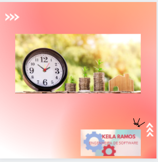
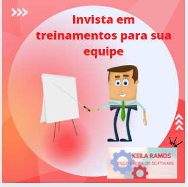

-
Análise de requisitos

Análise e levantamento dos requisitos junto ao cliente. Entrevistas estruturadas são um método utilizado para esta fase e que poderão ter um papel importante na ajuda à compreensão de todas as funcionalidades pretendidas pelo cliente.
-
Desenvolvimento de software
criação, atualização, correção e manutenção de sites e sistemas. Em todas as etapas da construção. Seja uma aplicação móvel (web, híbrida ou nativa) ou desenvolvimento web ou desktop.
-
Treinamento Soft Skills
Soft Skills são todas as habilidades que não se encontram dentro de uma amplitude simplesmente técnica, mas estão relacionadas à maneira com que nos comunicamos, nos expressamos e colaboramos com o outro